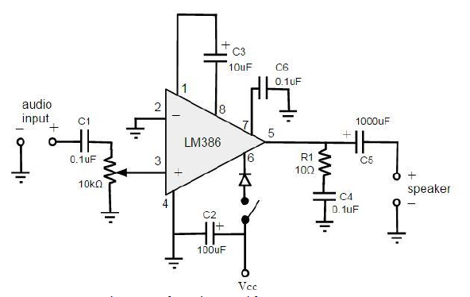
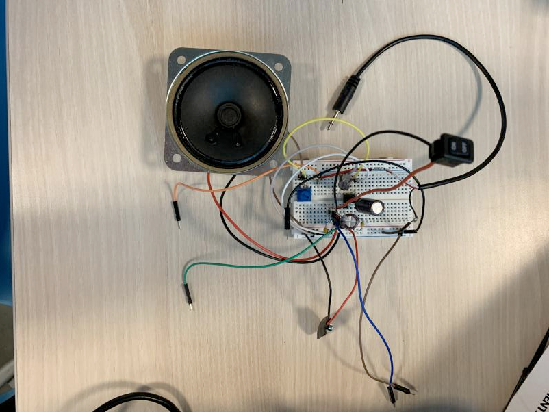
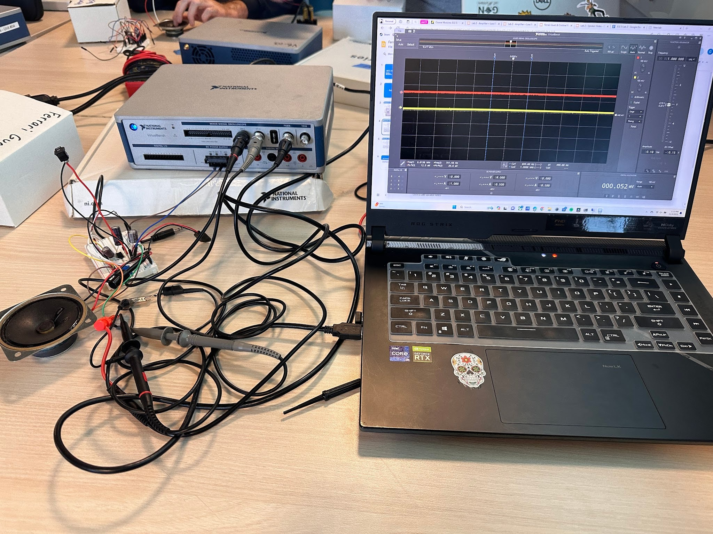
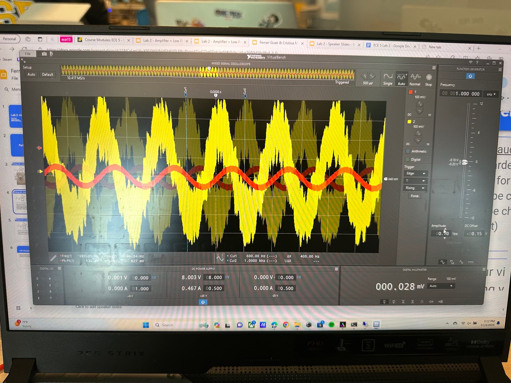

Using the power supply and the oscilloscope, we tested the prototype before and after making the soldered PCB version. The power supply is used to power the circuit in the absence of a battery or external power source. The oscilloscope is used to measure the input and output signals for the circuit to ensure proper functions.


Our audio amplifier sound and produces output with desired volume and power levels. The multimeter was a handy tool in the creation of this circuit which tested connectivity of parts and measured voltages. Soldered components coming apart and disattaching was a recurring issue. The circuit had smoke coming out, but this issue was fixed after the components were spaced out more.